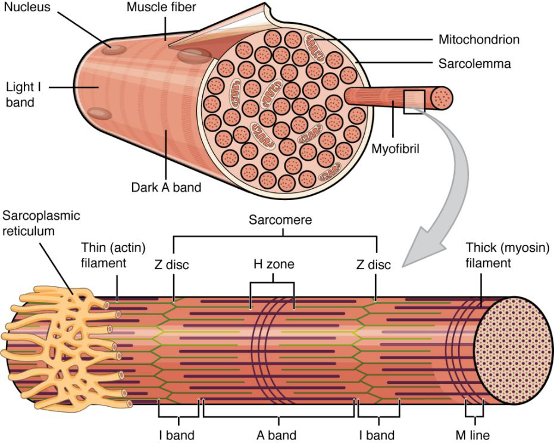
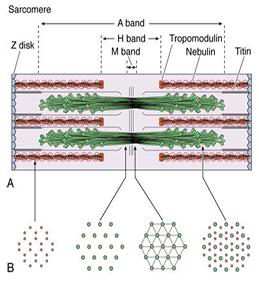
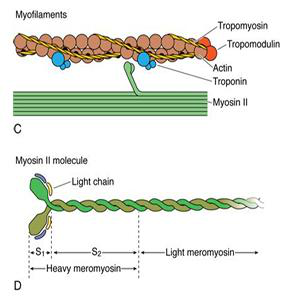
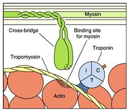
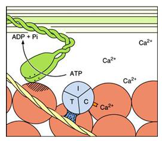
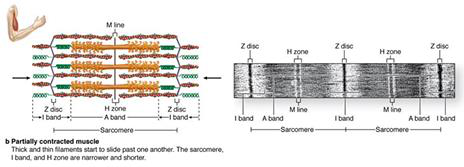
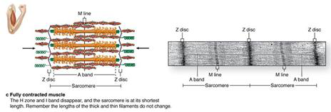

SISTEM OTOT (MUSKULAR)
Pengkajian komprehensif mengenai organisasi hirarkis jaringan ikat, ultrastruktur serat otot, mekanisme konduksi elektrofisiologi, daur jembatan silang molekuler, jalur bioenergetika resintesis ATP, hingga patofisiologi klinis sistem otot rangka pada tubuh manusia.

*Gambar Utama: Gambaran Umum Anatomi Sistem Muskuloskeletal Manusia
Disusun Oleh Kelompok 12
Dosen Pengampu: Dr. Dani Ramdani, S.Pd., M.Pd.
Muhamad Ridlo Haikal
NIM: 222154130
Chika Nurhafidzah Angela
NIM: 242154111115
Syapiq Ilham
NIM: 242154111127
Ghaly Fayi Al Hazmi
NIM: 242154111131
Anatomi Makroskopis Otot Rangka
Otot rangka bukan sekadar massa daging tunggal, melainkan suatu organ kompleks yang tersusun atas komponen selular dan jaringan ikat pembungkus yang saling terintegrasi secara hirarkis. Kehadiran jaringan ikat ini sangat vital untuk menyalurkan gaya mekanis yang dihasilkan oleh kontraksi serat otot menuju struktur tulang melalui tendon.
Epimisium (Lapisan Terluar)
Epimisium merupakan lapisan jaringan ikat padat fibrosa tidak teratur yang mengelilingi dan membungkus seluruh bagian luar perut otot (*belly*). Lapisan ini berfungsi melindungi otot dari gesekan dengan organ atau otot lain di sekitarnya, serta menyatukan seluruh komponen fasikulus di dalamnya menjadi satu kesatuan unit organ yang solid.
Perimisium & Fasikulus
Di bagian dalam perut otot, jaringan ikat menyusup dan membagi massa otot menjadi berkas-berkas terpisah yang disebut **fasikulus**. Setiap fasikulus dibungkus oleh selubung jaringan ikat yang tebal bernama **Perimisium**. Perimisium berfungsi sebagai jalur utama pembuluh darah besar dan saraf fasikularis untuk mensuplai nutrisi dan impuls listrik ke kelompok serat otot.
Endomisium & Integrasi Tendon
Di dalam setiap fasikulus, terdapat lapisan jaringan ikat retikuler yang sangat halus bernama **Endomisium**. Lapisan ini membungkus setiap satu serat/sel otot secara individual. Ketiga lapisan jaringan ikat ini (epimisium, perimisium, dan endomisium) menyatu di ujung otot membentuk struktur kolagen yang sangat kuat yaitu **Tendon**, yang melekat pada periosteum tulang.

*Gambar 1: Hirarki Lapisan Jaringan Ikat Otot Rangka
Struktur Mikroskopis Serat Otot
Serat otot rangka (sitosit) merupakan sel silindris panjang multinukleat yang terbentuk dari fusi embrional banyak mioblas. Struktur internal sel ini sangat terspesialisasi untuk mendukung fungsi konduksi impuls dan kontraksi mekanis secara simultan.
Membran sel otot yang eksitabel secara elektrik disebut **Sarkolema**. Sarkolema membentuk lekukan memanjang menyusup ke dalam sitoplasma sel (sarkoplasma) yang dikenal sebagai **Tubulus Transversus (Tubulus T)**. Tubulus T berfungsi menyalurkan gelombang depolarisasi potensial aksi secara instan dari permukaan sel hingga ke bagian terdalam sel otot.
**Retikulum Sarkoplasma (RS)** merupakan jaringan retikulum endoplasma halus khusus yang membungkus setiap miofibril. RS memiliki bagian ujung melebar bernama *sistena terminalis* yang berfungsi menyimpan ion Kalsium (Ca²⁺) yang terikat protein *calsequestrin*. Pertemuan antara satu Tubulus T dan dua sistena terminalis RS membentuk struktur khusus bernama **Triad**.

*Gambar 2: Organel Mikroskopis dan Sistem Triad Sel Otot
Struktur Molekuler Sarkomer
Miofibril terdiri dari ribuan unit fungsional berturut-turut yang disebut **Sarkomer**, yang dibatasi oleh dua Garis Z berurutan. Sarkomer memberikan penampakan lurik (*striated*) pada otot rangka akibat susunan teratur antara filamen tebal dan filamen tipis.
Filamen Miosin (Miofilamen Tebal)
Filamen tebal tersusun atas molekul protein Miosin II. Setiap molekul miosin memiliki batang/ekor heliks yang menumpuk membentuk poros filamen, serta dua kepala globular membulat yang menonjol keluar. Kepala miosin mengandung dua situs aktif penting: situs ikatan dengan aktin dan situs enzim ATPase yang memecah ATP menjadi ADP + Pi.
Filamen Aktin (Miofilamen Tipis)
Filamen tipis tersusun utama atas heliks ganda dari polimer F-Aktin (yang terbentuk dari monomer globular G-Aktin). Pada setiap molekul G-Aktin, terdapat *active site* khusus yang berfungsi sebagai tempat melekatnya (*binding site*) kepala miosin saat pembentukan jembatan silang.
Tropomiosin & Kompleks Troponin
**Tropomiosin** adalah protein berbentuk pita yang menutupi situs aktif aktin saat otot dalam kondisi relaksasi/istirahat. **Troponin** adalah kompleks protein yang terdiri dari tiga subunit: Troponin C (pengikat ion Kalsium), Troponin I (inhibitor ikatan aktin-miosin), dan Troponin T (pengikat tropomiosin).

*Gambar 3: Detail Struktur Molekuler Sarkomer dan Filamen
Fisiologi Tautan Neuromuskular (NMJ)
Inisiasi kontraksi otot rangka dimulai dari sinyal listrik pada sistem saraf pusat yang dihantarkan melalui neuron motorik α menuju **Tautan Neuromuskular (Neuromuscular Junction / NMJ)**, yaitu sinapsis kimia khusus antara terminal akson presinaptik dengan lipatan *motor end-plate* sarkolema.
Potensial aksi menjalar di sepanjang akson dan memicu pembukaan saluran kalsium berbasis tegangan (*voltage-gated Ca²⁺ channels*) pada terminal presinaptik.
Masuknya Ca²⁺ memicu eksositosis vesikel sinaptik yang melepaskan neurotransmiter Asetilkolin (ACh) menyeberangi celah sinaptik (*synaptic cleft*).
ACh berikatan dengan reseptor nikotinik (nAChR) di motor end-plate memicu terjadinya *End-Plate Potential (EPP)*. Potensial aksi merambat ke Tubulus T dan merangsang reseptor DHP-RyR untuk membocorkan Ca²⁺ dari RS ke sitosol.

*Gambar 4: Fisiologi Transmisi Sinaptik Tautan Neuromuskular
Mekanisme Kontraksi (Sliding Filament Theory)
Kontraksi otot dipahami melalui teori pergeseran filamen (*Sliding Filament Theory*), di mana filamen tipis aktin memendek ke arah pusat sarkomer (Garis M) dengan meluncur di atas filamen tebal miosin. Proses ini melibatkan daur pembentukan jembatan silang (*cross-bridge cycle*) secara berulang.
Ion Ca²⁺ berikatan dengan Troponin C, menggeser tropomiosin. Kepala miosin yang terisi ADP + Pi menempel pada situs aktif aktin membentuk *cross-bridge*.
Pelepasan Pi menyebabkan perubahan konformasi kepala miosin untuk membengkok (*power stroke*), menarik filamen aktin ke pusat sarkomer. ADP kemudian dilepaskan.
Molekul ATP baru mengikat kepala miosin untuk memutuskan ikatan miosin-aktin. Enzim ATPase hidrolisis ATP menjadi ADP + Pi untuk mengokang kembali miosin ke posisi semula.

*Gambar 5: Daur Ulang Jembatan Silang Miosin-Aktin
Relaksasi Otot & Peran Pompa SERCA
Proses relaksasi merupakan mekanisme aktif yang memerlukan energi, bukan sekadar berhentinya kontraksi secara pasif. Relaksasi terjadi ketika sinyal transmisi saraf terhenti dan kadar ion kalsium bebas di dalam sitosol diturunkan secara drastis.
Enzim Asetilkolinesterase (AChE) yang berada di celah sinaptik memecah Asetilkolin menjadi asetat dan kolin dalam hitungan milidetik. Hal ini menghentikan gelombang depolarisasi potensial aksi pada sarkolema.
Pompa kalsium ATPase bernama **SERCA (Sarcoplasmic/Endoplasmic Reticulum Calcium ATPase)** memompa kembali ion Ca²⁺ dari sitosol masuk ke dalam lumen Retikulum Sarkoplasma melawan gradien konsentrasi tajam. Penurunan Ca²⁺ memicu tropomiosin kembali menutup situs aktif aktin.

*Gambar 6: Fisiologi Pompa SERCA Dalam Mengembalikan Kalsium
Metabolisme & Bioenergetika Otot
Kontraksi otot memerlukan pasokan Adenosin Trifosfat (ATP) secara konstan untuk menggerakkan kepala miosin dan menjalankan pompa kalsium SERCA. Karena simpanan ATP langsung di dalam sel otot hanya cukup untuk kontraksi beberapa detik, sel otot mengandalkan tiga jalur bioenergetika:
Transfer gugus fosfat berenergi tinggi dari Kreatin Fosfat (CP) ke ADP dengan bantuan enzim *kreatin kinase*. Menyediakan ATP instan tanpa O₂ untuk aktivitas singkat intensitas tinggi (6–10 detik).
Memecah glikogen otot atau glukosa darah menjadi piruvat dan asam laktat tanpa O₂. Menghasilkan 2 ATP per molekul glukosa secara cepat untuk durasi sedang (10 detik hingga 2 menit).
Respirasi aerobik di dalam mitokondria yang mengoksidasi glukosa, asam lemak, dan asam amino dengan bantuan O₂. Menghasilkan hingga 36–38 ATP untuk aktivitas ketahanan jangka panjang.

*Gambar 7: Jalur Bioenergetika Resintesis ATP pada Sel Otot
Kedutan Otot, Sumasi, Tetanus & Kelelahan
Respon mekanis sel otot terhadap rangsangan listrik bervariasi berdasarkan frekuensi dan durasi impuls yang diterima oleh neuron motorik.
Respon mekanis tunggal terhadap satu potensial aksi, yang terdiri atas **Fase Laten** (pemicuan Ca²⁺), **Fase Kontraksi** (pembentukan cross-bridge), dan **Fase Relaksasi** (re-uptake Ca²⁺ SERCA).
Jika stimulus kedua diberikan sebelum otot relaks penuh, gaya kontraksi akan dijumlahkan (**Sumasi Gelombang**). Frekuensi Rangsangan yang sangat tinggi memicu kontraksi maksimal tanpa relaksasi sama sekali yang disebut **Tetanus Sempurna**.
Ketidakmampuan otot mempertahankan tegangan mekanis akibat akumulasi metabolit (H⁺ dari asam laktat, Pi), deplesi glikogen, serta penurunan sensitivitas kalsium.

*Gambar 8: Grafik Respon Mekanis Single Twitch, Sumasi, dan Tetanus
Kelainan & Patofisiologi Sistem Otot
Gangguan pada sistem muskular dapat bersumber dari mutasi genetik protein struktural, serangan autoimun pada komponen sinaptik, maupun kelainan konduksi membran sel.
Kelainan terikat kromosom X akibat mutasi ketiadaan protein **Distrofin**. Tanpa distrofin, sarkolema menjadi sangat rapuh terhadap tekanan mekanis, memicu kebocoran kalsium dan kematian sel otot progresif.
Penyakit autoimun di mana tubuh membentuk antibodi yang menyerang dan merusak reseptor nikotinik Asetilkolin (nAChR) di motor end-plate. Mengakibatkan kegagalan transmisi sinyal saraf-otot dan kelemahan otot yang parah.
Kelainan genetik multinukleat yang ditandai dengan **Miotonia**, yaitu ketidakmampuan sel otot untuk melakukan relaksasi secara cepat setelah terjadinya kontraksi volunter akibat gangguan saluran ion membran.
*Gambar 9: Gambaran Patofisiologi Kelainan Otot Rangka